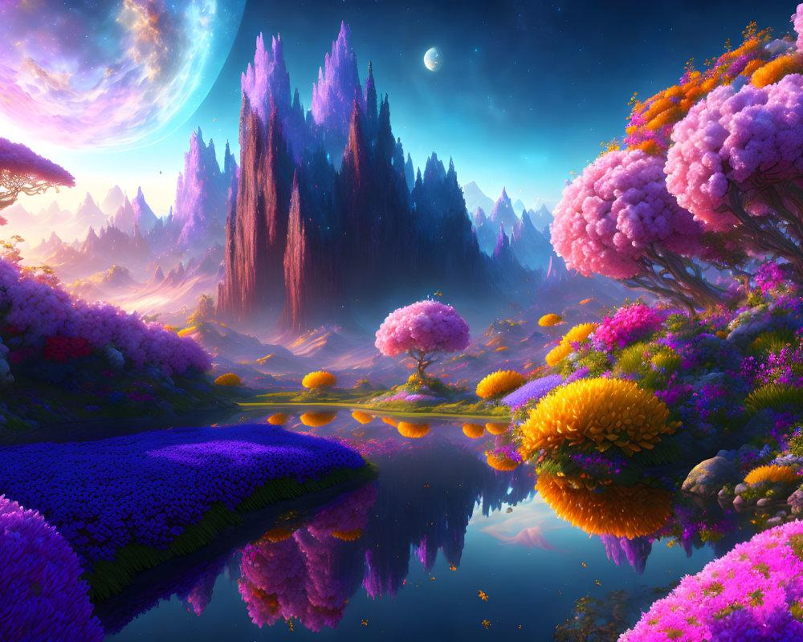
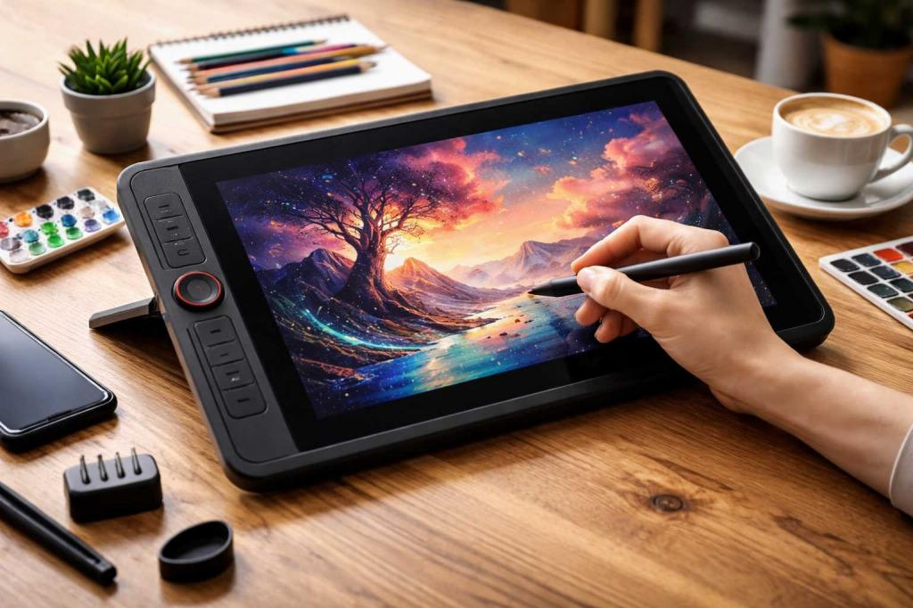
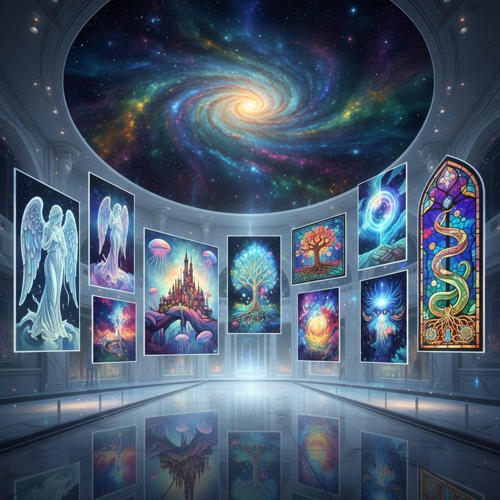

الفن الرقمي
حين تلتقي التكنولوجيا بالخيال، تولد عوالم فنية بلا حدود.
ما هو الفن الرقمي؟
الفن الرقمي هو نوع من الفنون يعتمد على استخدام الأجهزة والبرامج الرقمية لإنشاء أعمال فنية مبتكرة، مثل الرسومات والتصاميم والصور ثلاثية الأبعاد. يمنح الفنان مساحة واسعة للتجربة وتحويل أفكاره إلى إبداعات بصرية.
نافذة إلى عالم الإبداع الرقمي

عوالم خيالية
مشاهد رقمية تأخذنا إلى أماكن لا وجود لها في الواقع.

التصميم الإبداعي
دمج الأشكال والألوان لصناعة تصاميم مميزة.

الفن ثلاثي الأبعاد
إنشاء مجسمات ومشاهد تبدو وكأنها حقيقية.
أنواع الفن الرقمي
| الرقم | نوع الفن | الوصف |
|---|---|---|
| 01 | الرسم الرقمي | إنشاء الرسومات باستخدام الأجهزة والبرامج. |
| 02 | التصميم ثلاثي الأبعاد | إنشاء مجسمات رقمية لها عمق وأبعاد. |
| 03 | التصوير الرقمي | معالجة الصور وإضافة التأثيرات الفنية إليها. |
| 04 | الرسوم المتحركة | تحويل الرسومات إلى مشاهد متحركة. |
استمع إلى عالم الإبداع
هنا سنضيف مقطعًا صوتيًا يرافق رحلتك في عالم الفن الرقمي.